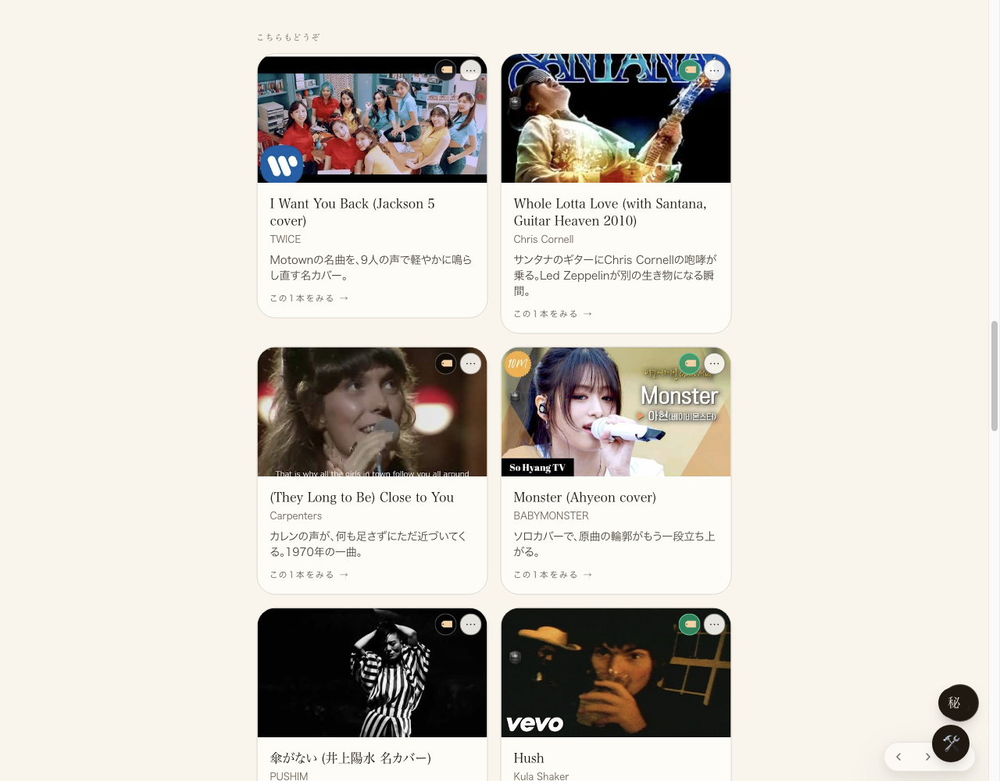
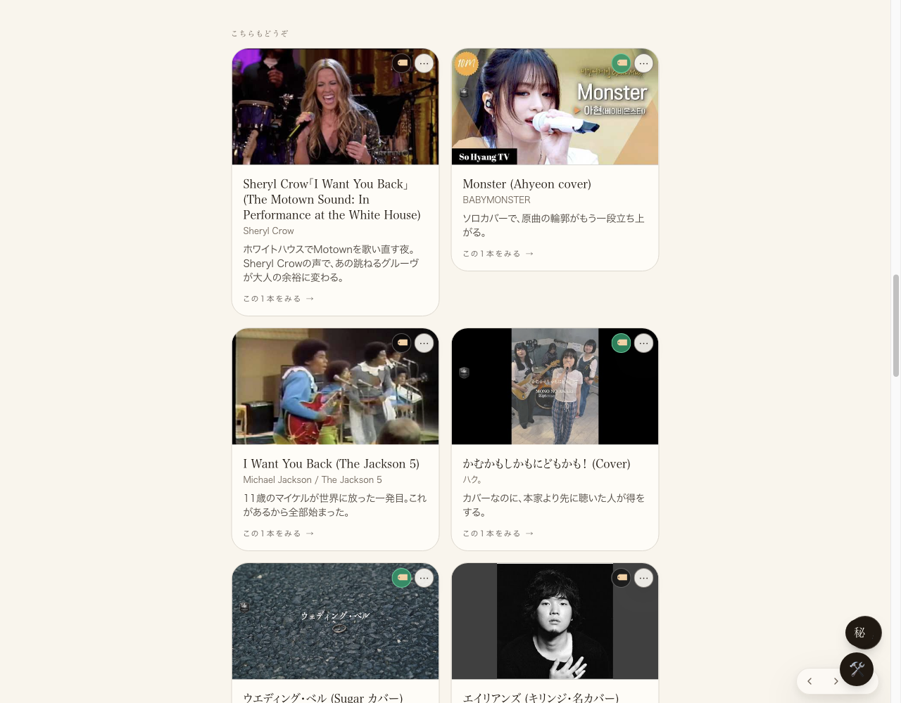
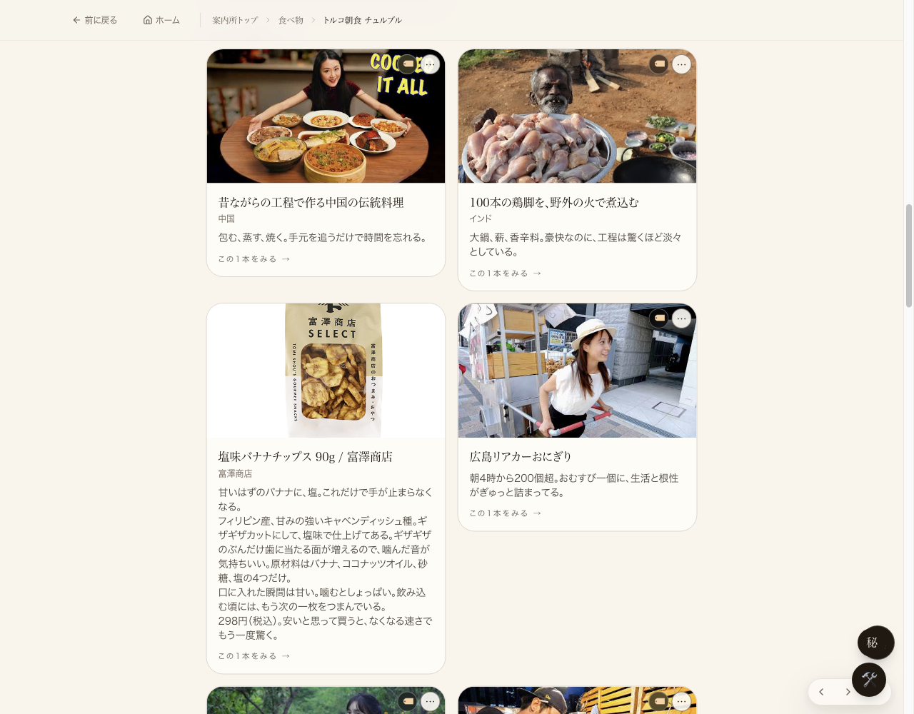
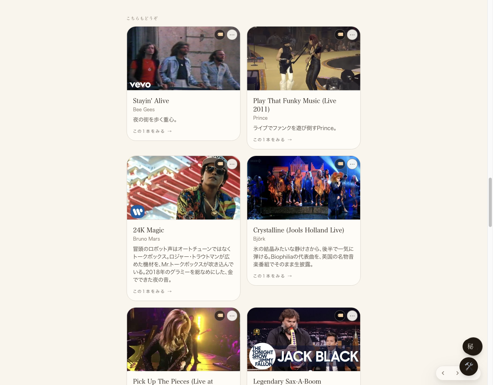
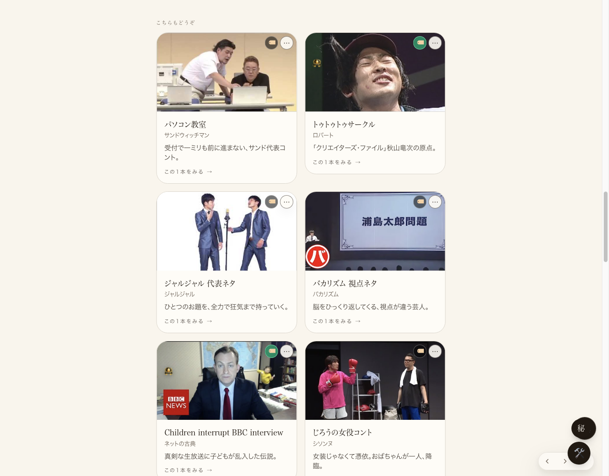
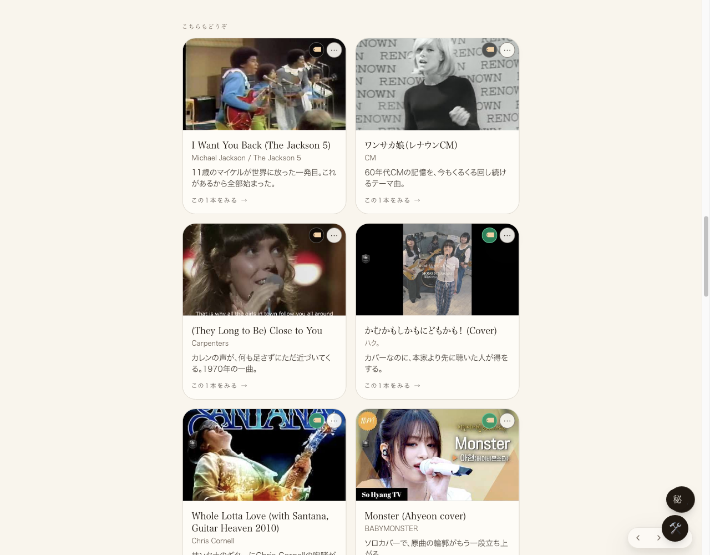
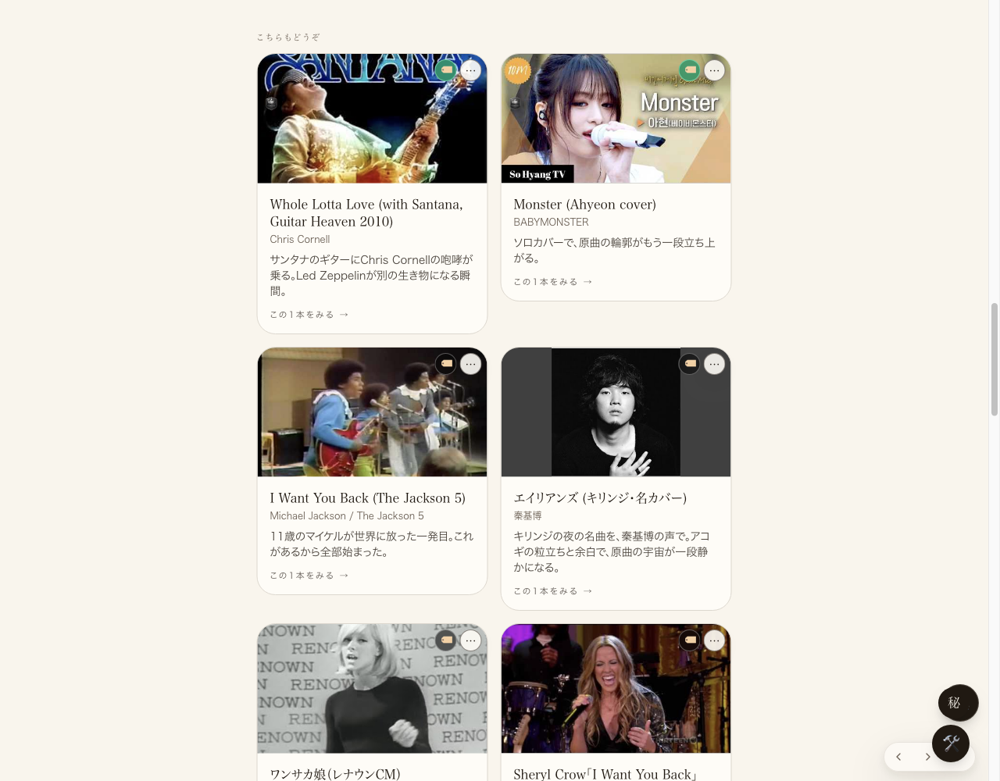

共有資料の一覧
／ 確認ページ #3 「こちらもどうぞ」を全ページ10個・毎回シャッフル・バッジ3件混成
#3 「こちらもどうぞ」を全ページ10個・毎回シャッフル・バッジ3件混成
2026-09-06 実装・main合流・本番(GitHub Pages)反映まで実測確認
関連カード列（こちらもどうぞ／こちらも、同じ流れで）を、全ページで必ず10個・棚に実在するものだけ・バッジ(コンシェルジュ推し/グッドカバー)を数個混ぜ・毎回シャッフルする実装。既にmainへ合流済みだったコード(コミット2e4ea39f)をLovable本番へ公開実行し、実ブラウザで5種類のページを確認した。
② 数字
6/6
確認した6ページのうち10件表示できたページ数(曲・一般カード×3・食べ物)
0〜5
ページごとのバッジ混入数(棚のバッジ素材量に応じてばらつきあり)
① 種類の違う5ページで「10個出ている」スクリーンショット
①曲ページ（cover-guide・秦基博「エイリアンズ」）

②一般カードページ（Ado「かわいくてごめん」）

③食べ物ページ（トルコ朝食チュルブル）

④動物カード（ニャンゴスター）

⑤笑いカード（ロバート秋山アイスワールド）

② 同じページを2回読み込んで並びが変わっている証拠
1回目に開いた並び(②一般カードページ)

同じページを開き直した並び(順番が変わっている)

③ バッジ付きが何個混ざっているか（実測）
ページ
件数
バッジ数
①曲ページ（秦基博「エイリアンズ」）
10
5
②一般カードページ（Ado「かわいくてごめん」）
10
4
③食べ物ページ（チュルブル）
10
0（このジャンルはバッジ付き素材が現状無い）
④動物カード（ニャンゴスター）
10
3
⑤笑いカード（アイスワールド）
10
2
④ 押せるリンク
①曲ページ(棚に実在する曲)
https://joy-relief-station.lovable.app/cover-guide?artist=hata-motohiro&song=aliens
②一般カードページ
https://joy-relief-station.lovable.app/room/card/ado-kawaikute-gomen
③食べ物ページ
https://joy-relief-station.lovable.app/room/food/cilbir
④動物カード
https://joy-relief-station.lovable.app/room/card/nyangostar
⑤笑いカード
https://joy-relief-station.lovable.app/room/card/akiyama-ice-world